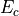
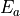

PEC¶
Introduction¶
PEC takes advantage of the photovoltaic effect, discovered by [6] in 1839, that occurs at the interface of a semiconductor and an electrolyte. In fact, the first experience showed the occurence of a photopotential and a photocurrent under illumination when a silver electrode, covered with an oxide layer, was immersed in an acidic medium and connected to a platinum electrode. Nonetheless, the first studies focused on the understanding of the interfacial processes were performed much later [7, 8, 9].
The basics of photoelectrochemistry and application examples are presented here and they are largely described in the literature [10, 11, 12, 13, 14, 15]. Several hypotheses are needed in order to apply the theoretical concepts:
semiconductors are considered to be ideal i.e. crystalized and homogeneous
the dielectric constant of the semiconductor is independent of the light wavelength
the capacity of the Helmholtz layer is greater than the capacity of the space charge capacitance
the potential drop in the Helmholtz layer is independent of the applied potential and is negligible
The hypotheses are rarely fully respected in the case of oxides or passive films formed on common alloys. Nonetheless, the literature shows that the developed models can be applied to non-ideal systems such as oxides or passive layers.
Solids are generally classified into three groups: condcutors, semiconductors and insulators.
Each category can be illustrated with a specific band structure as shown in figure Fig. 14
[16].
Valence and conduction bands correspond to the allowed energy states for the electrons.
The lowest energy level of the conduction band is labeled  and the highest energy level
of the valence is labeled  . They are separated by a band gap,
. They are separated by a band gap,  , with no allowed
energy states.
The repartition of the electrons among both bands are described by the position of the Fermi level, ,
which represents the highest energy state that can be occupied at 0K.
, with no allowed
energy states.
The repartition of the electrons among both bands are described by the position of the Fermi level, ,
which represents the highest energy state that can be occupied at 0K.

Fig. 14 Band Structure¶
The electronic conduction is due to the movement either of the negatively charge electrons in the conduction band or the positively charged holes in the valence band or both simultaneously. Consequently, the conduction depends on the number of available charge carriers in the conduction and valence bands. In conductors, an overlap of the conduction and the valence bands occurs which means that the highest allowed energy band is partilly filled. The distinction between a semiconductor and an isolator is less obvious because the conduction depends on the band gap and the energy provided by the environment to the electron from the valence band in order to jump into the conduction band.
In semiconductors, charge carriers can be generated by three mechanisms: thermal, excitation, photoexcitation, doping, as shown in figure Fig. 15.
{kind=link}
Fig. 15 Schematic representation of the mechanisms generating charge carriers in semiconductors¶
In the case of very low band gaps, thermal excitation can be enough to eject an electron from the valence band into the conduction band. Photoexcitation ejects electrons from the valence band into the conduction band when an incident photon, with an energy greater than the band gap, is absorbed. Doping introduces additional energy levels located in between the conduction and valence bands.
Doping occurs when the stoichiometry is altered or when impurities are introduced in the crystallographic lattice of the semiconductor. In the case of n-type semiconductors, the donor energy levels lie just under the conduction band. The electrons from the donor levels are ejected by thermal excitation. Consequently, the majority charge carriers are negatively charged electrons in the conduction band. Similarly, the acceptor energy levels , of p-type semiconductors, lie just above the valence band. The latter trap electrons from the valence band and therefore create holes. Consequently, the majority charge carriers are positively charged holes.
The Fermi level in intrinsic semiconductors is located at the mid-gap.
The n-type and p-type doping shift the Fermi level towards band edges and ,
respectively.
The figure Fig. 16 shows the position of the Fermi level with respect to
the semiconductor types.

Fig. 16 Schematic representation of the Fermi level position¶